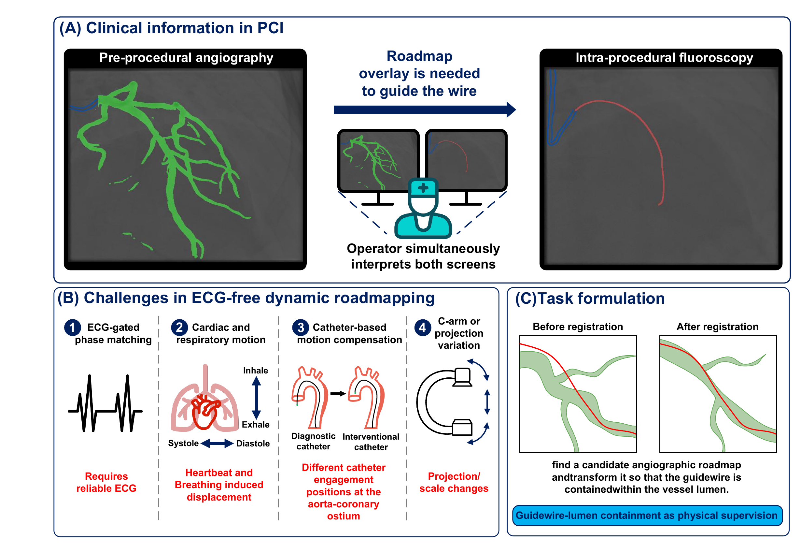
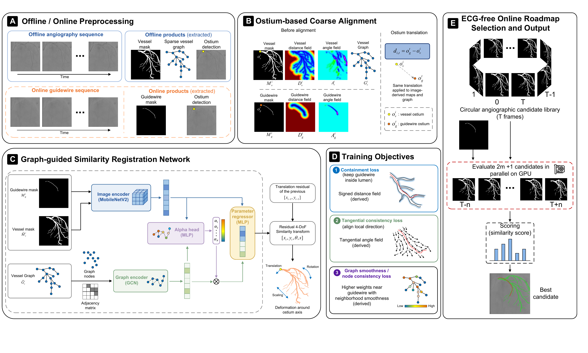
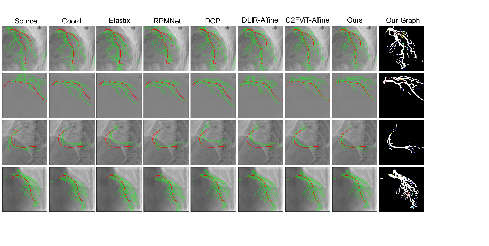

01
Guidewire–lumen containment
A distance-field loss turns sparse binary overlap into continuous spatial supervision, without ECG or ground-truth transforms.
Shanghai Jiao Tong University · Fudan University
Guidewire-constrained, graph-guided angiography–fluoroscopy registration for dynamic coronary roadmap generation without ECG synchronization.

The visible intra-procedural guidewire provides a direct physical constraint: it should remain inside the coronary lumen.
A distance-field loss turns sparse binary overlap into continuous spatial supervision, without ECG or ground-truth transforms.
Coronary topology helps the network focus on guidewire-related branches and suppress mismatches from non-target vessels.
A cyclic angiographic library is searched using geometric consistency to select the best roadmap for each fluoroscopic frame.
Catheter-tip coarse alignment, residual 4-DoF similarity registration, geometry-aware learning, and online candidate selection.

Evaluation on 95 paired angiography–fluoroscopy cases using vendor-stratified five-fold cross-validation.

Dynamic coronary roadmapping overlays angiographic coronary anatomy onto live non-contrast fluoroscopy to support percutaneous coronary intervention. We formulate angiography–fluoroscopy registration as a guidewire–lumen containment problem and introduce distance-field supervision, catheter-tip-guided residual similarity registration, and a coronary graph prior. During inference, a cyclic angiographic candidate library is searched according to guidewire–lumen geometric consistency. Clinical experiments show improved containment and spatial alignment compared with representative image- and geometry-registration baselines, enabling dynamic roadmap generation without ECG synchronization.